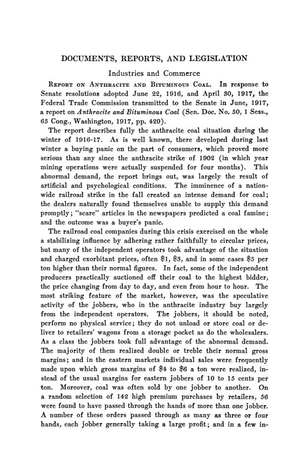

A receita de guerra, o coletivismo de Clark e a escala de Dewing
Leitura: 13 min
Blakey descreve a lei de receita de guerra de 1917; Clark pergunta o que restará do coletivismo de guerra; Dewing liga escala e custo do capital; Skelton e Rietz tratam do Canadá e do seguro de vida.


Em 3 de outubro de 1913, o presidente Wilson assinou sua primeira grande lei de receita, a tarifa Underwood. Exatamente quatro anos depois, em 3 de outubro de 1917, assinou a maior lei de receita de guerra feita até então. A primeira devia render cerca de três quartos de bilhão de dólares por ano para fins ordinários; a segunda, mais de 2,5 bilhões por ano, só para a guerra. Roy G. Blakey, da University of Minnesota, descreve a nova lei no número de dezembro de 1917 da American Economic Review.
É uma edição de economia de guerra. Arthur S. Dewing abre o número com uma revisão da lei dos rendimentos decrescentes, ilustrada com fábricas de calçados e encomendas de munições. J. M. Clark, da University of Chicago, pergunta quanto do coletivismo dos tempos de guerra ficará depois dela. Depois de Blakey, O. D. Skelton, da Queen's University, em Kingston, conta como o Canadá financiou três anos de conflito, e H. L. Rietz, da University of Illinois, discute como as seguradoras de vida cobrem o custo de vender apólices novas. Seguem resenhas, listas de livros novos, documentos oficiais, resumos de periódicos e as notas.
Até onde vale a pena crescer?
Arthur S. Dewing · “The Law of Balanced Return” · pp. 755–771
A lei dos rendimentos decrescentes nasceu na agricultura, onde, observa Arthur S. Dewing, quase não pode ser testada: dois terrenos nunca são iguais, e o clima muda de um ano para outro. Dewing lista os quatro pressupostos da lei, entre eles o de que fatores e produto possam ser medidos em quantidades comparáveis, e propõe aplicá-la à indústria, onde o capital fixo é o fator mais constante e o trabalho pode ser medido e controlado.
Os experimentos vêm da prática. Na indústria de calçados, um fabricante bem-sucedido numa oficina pequena e antiquada construiu uma fábrica modelo para o mesmo tipo de sapato, com a mesma tabela de salários por peça, e faliu: o custo do capital fixo era grande demais para aquele produto. Os sapatos finos ficam nas pequenas oficinas de Haverhill, Brooklyn e Newark; os mais baratos, na grande fábrica da McElwain Company.
No sentido inverso, os fabricantes de metal e munições que aceitaram encomendas dos governos beligerantes dobraram ou triplicaram o trabalho nas mesmas instalações, passando de um turno de dez horas a três de oito. Três turnos não produziram 2,4 vezes o que produzia um. As oficinas de trabalho manual de Connecticut e Vermont que aceitaram subcontratos de espoletas se arruinaram; Bethlehem Steel, Westinghouse e Remington apenas ganharam menos que o esperado.
Daí a lei do retorno equilibrado: a razão entre o custo do trabalho e o do capital fixo em cada unidade de produto determina o ponto além do qual ampliar a escala deixa de ser econômico. Onde o trabalho manual pesa, esse ponto chega cedo; onde predomina a máquina, tarde. Na siderurgia, quatro siderurgistas disseram ao autor que nenhuma usina realmente econômica se constrói por menos de dez milhões de dólares. A American Tobacco Company chegou a mais de 90% dos cigarros feitos a máquina e nunca dominou os charutos, feitos à mão.
“Se você tem pouco capital, entre num negócio com bastante trabalho manual.” (“If you have little capital, go into a business with a good deal of handwork.”)
O conselho, que Dewing atribui ao homem de negócios prático, expressa a mesma regra. O autor acrescenta que a formulação clássica ignora a capacidade empresarial, e que acertar a escala de produção é a decisão que a direção de uma empresa não pode delegar.
O que a guerra ensina sobre o mercado?
J. M. Clark (University of Chicago) · “The Basis of War-Time Collectivism” · pp. 772–790
J. M. Clark pergunta quanto do quase socialismo da guerra é temporário. Sua resposta parte de um princípio: a guerra deu à economia um fim supremo, definível em termos objetivos, de modo que bens e serviços podem ser avaliados por padrões científicos, como calorias e proteínas, e não pelos preços, que registram preferências. A economia de preferências subjetivas dá lugar a uma economia de padrões objetivos.
O método individualista mostra logo um paradoxo. Quando o governo paga salários altos aos operários das fábricas de munições, eles passam a disputar com o próprio governo, com o dinheiro que ganham, o trabalho necessário para produzir charutos, vitrolas e pianos. Uma nação que gasta um terço ou um quarto da renda nacional na guerra pouco tem para ampliar o consumo.
Clark enumera as falhas que a guerra expõe: o poder de compra desigual decide o que se produz; milhares de vendedores gastam em persuasão mútua; o conhecimento, que não se cerca como propriedade privada, é pouco produzido ou pouco usado. A guerra socializa o conhecimento, e o autor cita o novo motor de avião americano, resultado da reunião de engenheiros, projetos e segredos de fabricação.
Os temas seguintes são o mínimo social, de que o racionamento é a forma de guerra e que já incluía ensino gratuito, parques e agências públicas de emprego; a orientação pública do consumo em lugar da publicidade; e o controle das remunerações, com a diferença entre o salário de eficiência coletiva, que sustenta saúde e produção, e o competitivo, que apenas retém o trabalhador num posto. A sociedade pode agir como compradora monopolista de trabalho, capital e recursos naturais.
Clark prevê um pós-guerra nem socialista nem individualista à maneira antiga. Defende que o governo ajude as empresas a ser mais eficientes e adverte que padrões objetivos são difíceis e trabalhosos de obter. A frase final resume o argumento:
“Sem ciência, só o despotismo pode ser organizado com coerência. Com a ciência à disposição, a democracia tem ao menos uma chance.” (“Without science only despotism can be coherently organized. With science at its disposal, democracy has at least a chance.”)
Como os Estados Unidos tributaram a guerra?
Roy G. Blakey (University of Minnesota) · “The War Revenue Act of 1917” · pp. 791–815
A lei de 3 de outubro de 1917 tinha receita estimada em US$ 2.514,8 milhões por ano: US$ 851 milhões de impostos de renda e US$ 1 bilhão do imposto sobre lucros extraordinários. Somada à lei de 1916, a receita prevista chegava a 3,5 ou 3,75 bilhões de dólares, cerca de cinco vezes os impostos federais de antes da guerra. Mesmo assim, lembra Blakey, as dotações e autorizações para o ano fiscal encerrado em 30 de junho de 1918 passavam de US$ 21 bilhões.
A maior disputa entre Câmara e Senado foi o imposto sobre lucros de guerra. A Câmara propôs 8% sobre o que excedesse 8% do capital investido; o Senado preferia deduzir o lucro médio de 1911 a 1913 e aplicar alíquotas graduadas, alegando que o capital investido era difícil de apurar. A lei final deduz entre 7% e 9% do capital, conforme o lucro de antes da guerra, e aplica de 20% a 60% sobre o excedente. O Comissário da Receita Interna e o Secretário do Tesouro receberam grande poder discricionário nos casos difíceis.
A lei tributa ainda bebidas, tabaco, transportes, ingressos, documentos e heranças, eleva o porte da carta para 3 centavos e cria um sistema de zonas para a parte publicitária de jornais e revistas, a outra grande disputa. Na renda, troca a retenção na fonte pela informação na fonte.
Blakey considera que a lei ainda cobre parcela pequena demais do gasto de guerra. Quem compra um título, argumenta, corta menos o consumo do que quem paga imposto, e a diferença acaba coberta por inflação de crédito bancário.
“O que o governo precisa ter, em última análise, não é dinheiro, mas homens e mercadorias.” (“What the government must have ultimately is not money, but men and commodities.”)
Como o Canadá pagou a guerra?
O. D. Skelton (Queen's University, Kingston) · “Canadian War Finance” · pp. 816–831
Até 1914, o governo federal do Canadá vivia de tarifa aduaneira e impostos de consumo e tomava empréstimos só em Londres: mais de 99% da dívida líquida era pagável lá, e investidores ingleses detinham pelo menos US$ 2,5 bilhões em títulos canadenses públicos e privados. O. D. Skelton mostra como a guerra mudou as duas coisas.
No primeiro ano, o governo recorreu a notas do Dominion, a impostos sobre café, açúcar, tabaco e bebidas e a adiantamentos do Tesouro britânico. Com a queda das importações, a receita aduaneira de 1914-15 ficou em US$ 97 milhões, US$ 30 milhões menos que no ano anterior, e a dívida líquida cresceu US$ 113 milhões. Em 1915 vieram um adicional de 7,5% ad valorem na tarifa geral e de 5% na preferencial e a primeira ida do governo ao mercado de Nova York.
Os impostos diretos vieram devagar. Em 1916 criou-se um imposto sobre lucros: 25% sobre o lucro das empresas acima de 7% do capital empregado, para capitais de US$ 50 mil ou mais. Em 1917 ele foi graduado até 70% sobre lucros acima de 20%, e em julho o governo, que vinha recusando um imposto de renda, propôs um, logo aprovado: 4% acima de US$ 1.500 para solteiros e de US$ 3.000 para os demais, com sobretaxa de até 25% acima de US$ 100 mil.
A relação com a Grã-Bretanha se inverteu: o Canadá, que tomava emprestado, passou a financiar as compras britânicas no país. Em 20 de julho de 1917, a Grã-Bretanha devia ao governo canadense um saldo de US$ 92 milhões em conta aberta. O custo da guerra até essa data foi de US$ 623 milhões; a dívida, de US$ 336 milhões no início do conflito, deveria chegar a US$ 1,2 ou 1,3 bilhão no fim do ano fiscal.
Quem paga o custo de vender um seguro?
H. L. Rietz (University of Illinois) · “Methods of Providing for Expenses of Obtaining New Business by Life Insurance Companies” · pp. 832–838
Vender um seguro de vida novo custa caro: comissões dos agentes e honorários dos médicos examinadores. H. L. Rietz parte do princípio, aceito pelos especialistas, de que cada segurado deve pagar, tanto quanto possível, a despesa de colocar sua apólice nos livros da companhia. O obstáculo é que a reserva de prêmio líquido nivelado ignora que a despesa é muito maior no primeiro ano. Já em 1904, atuários americanos de prestígio afirmavam que leis de reserva nivelada tinham estrangulado companhias jovens.
Nos Estados Unidos, duas soluções dominavam. No método do prazo preliminar modificado, o primeiro ano é tratado como seguro temporário, e a diferença entre o prêmio bruto e o prêmio líquido de um ano fica livre para as despesas, com limite dado pela apólice de vida inteira. No método selecionado e final (select and ultimate), a reserva usa uma tábua que reflete a mortalidade menor de quem acabou de passar pelo exame médico.
O artigo responde às críticas de um manual recente, o Life Insurance de S. S. Huebner (1915), segundo o qual os dois métodos tomam emprestado da reserva. Rietz prefere dizer que a definição de reserva legal foi adaptada às condições de obter negócio novo. Com a reserva nivelada, ao contrário, a despesa do novo segurado sairia dos fundos dos segurados antigos.
Sua conclusão é que nenhum dos métodos tem vantagem clara. No prazo preliminar, é preciso evitar modificações que vão longe demais; no selecionado e final, facilitar a troca da tábua quando a experiência a justificar, dificuldade que o atuário inglês George King já apontara.
O que mais há na edição?
As resenhas incluem The Organization of the Lumber Industry, de Wilson Compton, por Edwin Clyde Robbins; Household Manufactures in the United States, 1640-1860, de Rolla Milton Tryon, por Harvey A. Wooster; Principles of Railroad Transportation, de Emory R. Johnson e Thurman W. Van Metre, por Carroll W. Doten; The Development of Transportation in Modern England, de W. T. Jackman, por Ernest Ritson Dewsnup; The New Protectionism, de J. A. Hobson, por John Bruce McPherson; The System of Financial Administration of Great Britain, dos Willoughby e de Samuel McCune Lindsay, por Carl C. Plehn; Social Diagnosis, de Mary E. Richmond, por W. H. Heck; e o plano de seguros e pensões para professores universitários de Henry S. Pritchett, por Edwin B. Wilson. Os documentos tratam de carvão antracito e betuminoso, cooperação no comércio de exportação, cooperativas de comercialização agrícola, a equação de trocas de 1916, por Irving Fisher, as finanças dos estados, a tributação em Ohio e uma conferência sobre seguro social. As notas anunciam a trigésima reunião anual, em Philadelphia, a partir de 27 de dezembro de 1917.
Na minha leitura
Na minha leitura, o número de dezembro de 1917 trata a guerra como um experimento. Dewing usa as encomendas de munições como teste de uma lei de produção; Clark vê na economia de guerra um laboratório de padrões objetivos que o mercado de tempos de paz não produzia; Rietz, no artigo mais técnico, examina como uma regra contábil de reserva distribui um custo entre gerações de segurados.
Blakey e Skelton tratam da mesma escolha por dois lados da fronteira: quanto da guerra pagar com impostos agora e quanto com dívida. Os dois descrevem como sistemas fiscais apoiados em tarifas e impostos de consumo passaram a depender de impostos sobre renda e lucros, e como a forma de financiar o gasto afeta o consumo, o crédito e os preços.
Glossário
- Rendimentos decrescentes
- queda do produto adicional quando se aumenta um fator mantendo outro fixo.
- Escala de produção
- tamanho da unidade que combina trabalho e capital numa empresa ou grupo de empresas.
- Capital fixo
- instalações e máquinas cujo custo não varia com o volume produzido no curto prazo.
- Mínimo social
- conjunto de bens e oportunidades que a sociedade garante a todos, fora da regra do poder de compra.
- Lucros extraordinários (excess profits)
- lucro acima de um retorno considerado normal sobre o capital, tributado à parte.
- Informação na fonte
- obrigação de quem paga rendimentos de informar o fisco, sem reter o imposto.
- Reserva de prêmio líquido nivelado
- reserva atuarial calculada como se o prêmio, sem despesas, fosse igual todos os anos.
- Prazo preliminar
- método que trata o primeiro ano da apólice como seguro temporário, liberando recursos para despesas.
Artigos (5)
- The Law of Balanced Return — Arthur S. Dewing (pp. 755–771) · resenha acima · JSTOR
- The Basis of War-Time Collectivism — J. M. Clark (University of Chicago) (pp. 772–790) · resenha acima · comentário completo · JSTOR
- The War Revenue Act of 1917 — Roy G. Blakey (University of Minnesota) (pp. 791–815) · resenha acima · comentário completo · JSTOR
- Canadian War Finance — O. D. Skelton (Queen's University, Kingston, Canada) (pp. 816–831) · resenha acima · JSTOR
- Methods of Providing for Expenses of Obtaining New Business by Life Insurance Companies — H. L. Rietz (University of Illinois) (pp. 832–838) · resenha acima · JSTOR
Resenhas (22)
- Paul L. Vogt, Introduction to Rural Sociology — Alexander E. Cance (pp. 843–845). Manual de sociologia rural. JSTOR
- Wilson Compton, The Organization of the Lumber Industry — Edwin Clyde Robbins (pp. 845–847). Estudo das influências sobre os preços da madeira nos Estados Unidos. JSTOR
- Rolla Milton Tryon, Household Manufactures in the United States, 1640-1860 — Harvey A. Wooster (pp. 848–851). Estudo de história industrial sobre a produção doméstica. JSTOR
- May Allinson, Dressmaking as a Trade for Women in Massachusetts — Sarah S. W. Walden (pp. 851–853). Estudo sobre a costura como ofício feminino. JSTOR
- Mary Verhoeff, The Kentucky River Navigation — Isaac Lippincott (pp. 853–855). História da navegação no rio Kentucky. JSTOR
- Emory R. Johnson e Thurman W. Van Metre, Principles of Railroad Transportation — Carroll W. Doten (pp. 855–856). Manual de economia ferroviária. JSTOR
- Mark Wymond, Government Partnership in Railroads — Ernest Ritson Dewsnup (pp. 856–858). Defesa de uma sociedade entre governo e ferrovias. JSTOR
- W. T. Jackman, The Development of Transportation in Modern England — Ernest Ritson Dewsnup (pp. 858–861). História dos transportes na Inglaterra moderna, em dois volumes. JSTOR
- Course in Foreign Trade (Pratt, org.), vols. VII–XII — Melvin T. Copeland (pp. 862–863). Segunda metade de um curso por correspondência sobre comércio exterior. JSTOR
- First Annual Report of the State Market Director of California — Alexander E. Cance (pp. 863–865). Relatório sobre a comercialização de produtos agrícolas na Califórnia. JSTOR
- John B. Swinney, Merchandising — Ray B. Westerfield (pp. 865–867). Volume da Modern Business Series sobre intermediários do comércio. JSTOR
- Arthur Kitson, Trade Fallacies — Everett W. Goodhue (pp. 867–869). Crítica de métodos comerciais e propostas de reforma. JSTOR
- Thomas W. Mitchell, Accounting Principles — John Bauer (pp. 871–873). Volume da Modern Business Series sobre princípios contábeis. JSTOR
- Peter P. Wahlstad, Credit and the Credit Man — Ray B. Westerfield (pp. 874–875). Manual sobre crédito comercial e sua gestão. JSTOR
- Major B. Foster, Banking — Chester A. Phillips (pp. 881–882). Volume da Modern Business Series sobre bancos. JSTOR
- Charles Phillips Huse, The Financial History of Boston from May 1, 1822, to January 31, 1909 — Henry B. Gardner (pp. 883–885). História financeira do município de Boston. JSTOR
- J. A. Hobson, The New Protectionism — John Bruce McPherson (pp. 885–888). Argumento contra o protecionismo econômico no pós-guerra. JSTOR
- William F. Willoughby, Westel W. Willoughby e Samuel McCune Lindsay, The System of Financial Administration of Great Britain — Carl C. Plehn (pp. 888–894). Estudo da administração financeira e do orçamento britânicos. JSTOR
- Louis I. Dublin, Causes of Death by Occupation — Emery R. Hayhurst (pp. 897–898). Boletim do Bureau of Labor Statistics sobre mortalidade por ocupação. JSTOR
- Mary E. Richmond, Social Diagnosis — W. H. Heck (pp. 899–901). Estudo do trabalho social de casos. JSTOR
- J. E. Rhodes 2d, Workmen's Compensation — Lindley D. Clark (pp. 908–910). História resumida da indenização por acidentes de trabalho. JSTOR
- Henry S. Pritchett, A Comprehensive Plan of Insurance and Annuities for College Teachers — Edwin B. Wilson (pp. 910–914). Plano da Carnegie Foundation de seguros e pensões para professores universitários. JSTOR
Novos livros (17)
- New Books (pp. 839–840). Lista de livros novos: obras gerais, teoria e sua história. JSTOR
- New Books (pp. 840–843). Lista de livros novos: história e geografia econômica. JSTOR
- New Books (pp. 847–848). Lista de livros novos: agricultura, mineração, silvicultura e pesca. JSTOR
- New Books (pp. 853). Lista de livros novos: indústrias manufatureiras. JSTOR
- New Books (pp. 861–862). Lista de livros novos: transporte e comunicações. JSTOR
- New Books (pp. 869–871). Lista de livros novos: comércio e crises comerciais. JSTOR
- New Books (pp. 875–878). Lista de livros novos: contabilidade, métodos de negócios e bolsas. JSTOR
- New Books (pp. 878–879). Lista de livros novos: capital e organização capitalista. JSTOR
- New Books (pp. 879–880). Lista de livros novos: trabalho e organizações de trabalhadores. JSTOR
- New Books (pp. 882–883). Lista de livros novos: moeda, preços, crédito e bancos. JSTOR
- New Books (pp. 894–897). Lista de livros novos: finanças públicas, tributação e tarifa. JSTOR
- New Books (pp. 898–899). Lista de livros novos: população e migração. JSTOR
- New Books (pp. 901–907). Lista de livros novos: problemas sociais e reformas. JSTOR
- New Books (pp. 914–917). Lista de livros novos: seguros e pensões. JSTOR
- New Books (pp. 917). Lista de livros novos: pauperismo e assistência. JSTOR
- New Books (pp. 917–918). Lista de livros novos: socialismo e cooperativas. JSTOR
- New Books (pp. 918). Lista de livros novos: estatística e seus métodos. JSTOR
Documentos, periódicos e notas (3)
- Documents, Reports, and Legislation (pp. 919–946). Resumos de documentos oficiais: carvão antracito e betuminoso, cooperação no comércio de exportação, cooperativas agrícolas de comercialização, equação de trocas de 1916, finanças dos estados, tributação em Ohio e conferência sobre seguro social. JSTOR
- Periodicals (pp. 947–971). Resumos de artigos de periódicos, por área. JSTOR
- Notes (pp. 972–984). Notas sobre a trigésima reunião anual, em Philadelphia, os trabalhos programados e os novos sócios. JSTOR
Fontes
- The Law of Balanced Return (pp. 755–771). JSTOR · Internet Archive (PDF)
- The Basis of War-Time Collectivism (pp. 772–790). JSTOR · Internet Archive (PDF)
- The War Revenue Act of 1917 (pp. 791–815). JSTOR · Internet Archive (PDF)
- Canadian War Finance (pp. 816–831). JSTOR · Internet Archive (PDF)
- Methods of Providing for Expenses of Obtaining New Business by Life Insurance Companies (pp. 832–838). JSTOR · Internet Archive (PDF)
- New Books (pp. 839–840). JSTOR · Internet Archive (PDF)
- New Books (pp. 840–843). JSTOR · Internet Archive (PDF)
- [untitled] The American Economic Review, (1917-12-01), pages 843-845 (pp. 843–845). JSTOR · Internet Archive (PDF)
- [untitled] The American Economic Review, (1917-12-01), pages 845-847 (pp. 845–847). JSTOR · Internet Archive (PDF)
- New Books (pp. 847–848). JSTOR · Internet Archive (PDF)
- [untitled] The American Economic Review, (1917-12-01), pages 848-851 (pp. 848–851). JSTOR · Internet Archive (PDF)
- [untitled] The American Economic Review, (1917-12-01), pages 851-853 (pp. 851–853). JSTOR · Internet Archive (PDF)
- New Books (pp. 853). JSTOR · Internet Archive (PDF)
- [untitled] The American Economic Review, (1917-12-01), pages 853-855 (pp. 853–855). JSTOR · Internet Archive (PDF)
- [untitled] The American Economic Review, (1917-12-01), pages 855-856 (pp. 855–856). JSTOR · Internet Archive (PDF)
- [untitled] The American Economic Review, (1917-12-01), pages 856-858 (pp. 856–858). JSTOR · Internet Archive (PDF)
- [untitled] The American Economic Review, (1917-12-01), pages 858-861 (pp. 858–861). JSTOR · Internet Archive (PDF)
- New Books (pp. 861–862). JSTOR · Internet Archive (PDF)
- [untitled] The American Economic Review, (1917-12-01), pages 862-863 (pp. 862–863). JSTOR · Internet Archive (PDF)
- [untitled] The American Economic Review, (1917-12-01), pages 863-865 (pp. 863–865). JSTOR · Internet Archive (PDF)
- [untitled] The American Economic Review, (1917-12-01), pages 865-867 (pp. 865–867). JSTOR · Internet Archive (PDF)
- [untitled] The American Economic Review, (1917-12-01), pages 867-869 (pp. 867–869). JSTOR · Internet Archive (PDF)
- New Books (pp. 869–871). JSTOR · Internet Archive (PDF)
- [untitled] The American Economic Review, (1917-12-01), pages 871-873 (pp. 871–873). JSTOR · Internet Archive (PDF)
- [untitled] The American Economic Review, (1917-12-01), pages 874-875 (pp. 874–875). JSTOR · Internet Archive (PDF)
- New Books (pp. 875–878). JSTOR · Internet Archive (PDF)
- New Books (pp. 878–879). JSTOR · Internet Archive (PDF)
- New Books (pp. 879–880). JSTOR · Internet Archive (PDF)
- [untitled] The American Economic Review, (1917-12-01), pages 881-882 (pp. 881–882). JSTOR · Internet Archive (PDF)
- New Books (pp. 882–883). JSTOR · Internet Archive (PDF)
- [untitled] The American Economic Review, (1917-12-01), pages 883-885 (pp. 883–885). JSTOR · Internet Archive (PDF)
- [untitled] The American Economic Review, (1917-12-01), pages 885-888 (pp. 885–888). JSTOR · Internet Archive (PDF)
- [untitled] The American Economic Review, (1917-12-01), pages 888-894 (pp. 888–894). JSTOR · Internet Archive (PDF)
- New Books (pp. 894–897). JSTOR · Internet Archive (PDF)
- [untitled] The American Economic Review, (1917-12-01), pages 897-898 (pp. 897–898). JSTOR · Internet Archive (PDF)
- New Books (pp. 898–899). JSTOR · Internet Archive (PDF)
- [untitled] The American Economic Review, (1917-12-01), pages 899-901 (pp. 899–901). JSTOR · Internet Archive (PDF)
- New Books (pp. 901–907). JSTOR · Internet Archive (PDF)
- [untitled] The American Economic Review, (1917-12-01), pages 908-910 (pp. 908–910). JSTOR · Internet Archive (PDF)
- [untitled] The American Economic Review, (1917-12-01), pages 910-914 (pp. 910–914). JSTOR · Internet Archive (PDF)
- New Books (pp. 914–917). JSTOR · Internet Archive (PDF)
- New Books (pp. 917). JSTOR · Internet Archive (PDF)
- New Books (pp. 917–918). JSTOR · Internet Archive (PDF)
- New Books (pp. 918). JSTOR · Internet Archive (PDF)
- Documents, Reports, and Legislation (pp. 919–946). JSTOR · Internet Archive (PDF)
- Periodicals (pp. 947–971). JSTOR · Internet Archive (PDF)
- Notes (pp. 972–984). JSTOR · Internet Archive (PDF)
- Sumário da edição no JSTOR: The American Economic Review, vol. 7, nº 4.
Documento em domínio público (EUA, publicado antes de 1931), via JSTOR Early Journal Content e Internet Archive. Resumo e comentário do autor deste site, sem afiliação com a American Economic Association. Encontrou um erro? Escreva: a correção é publicada no próprio texto, com data.
← Nº 148 · As reservas do Federal Reserve, a escala de Fall River e o Pacífico Nº 150 · O mercado da Califórnia, o trigo de Hoover e a fábula de Mandeville →